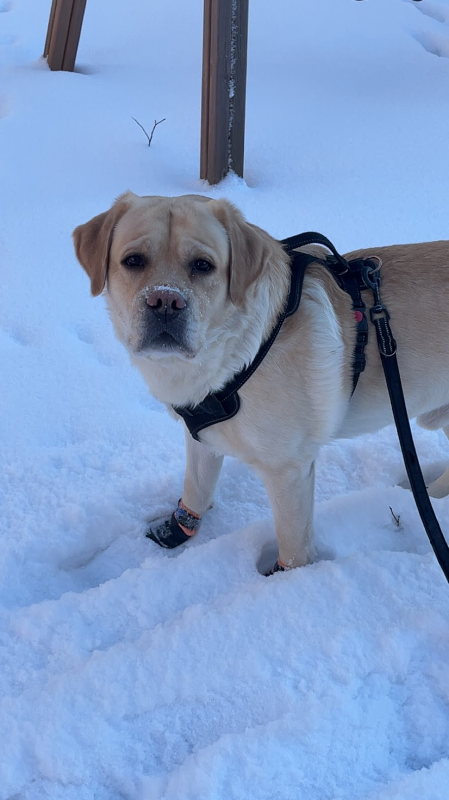
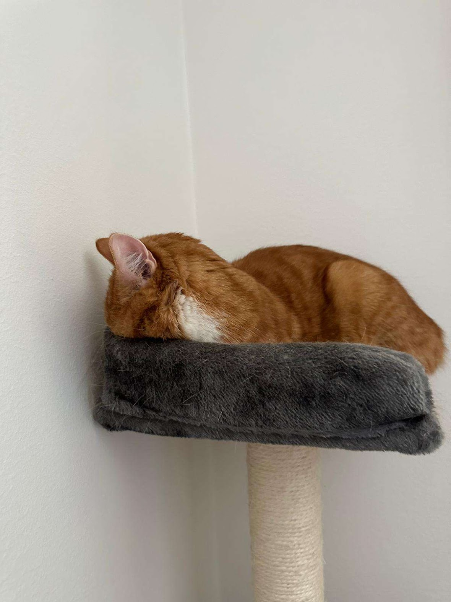
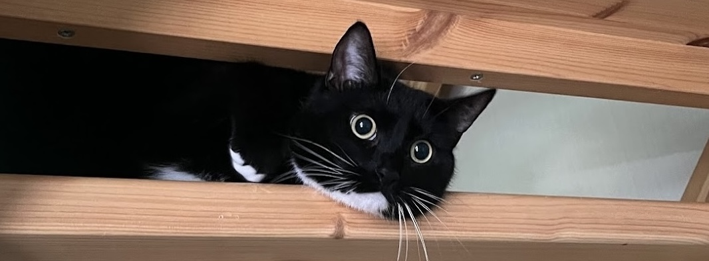
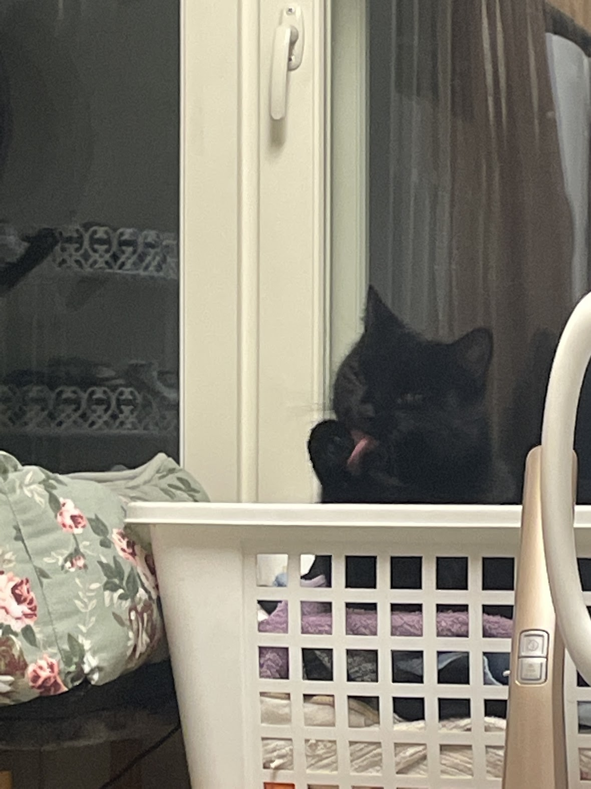
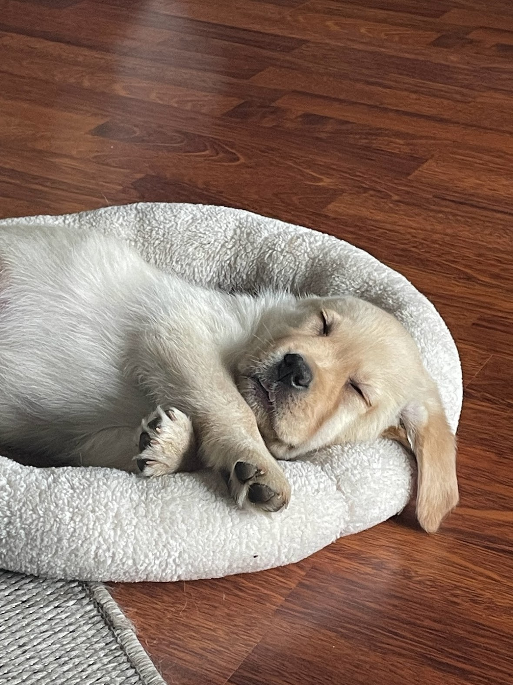
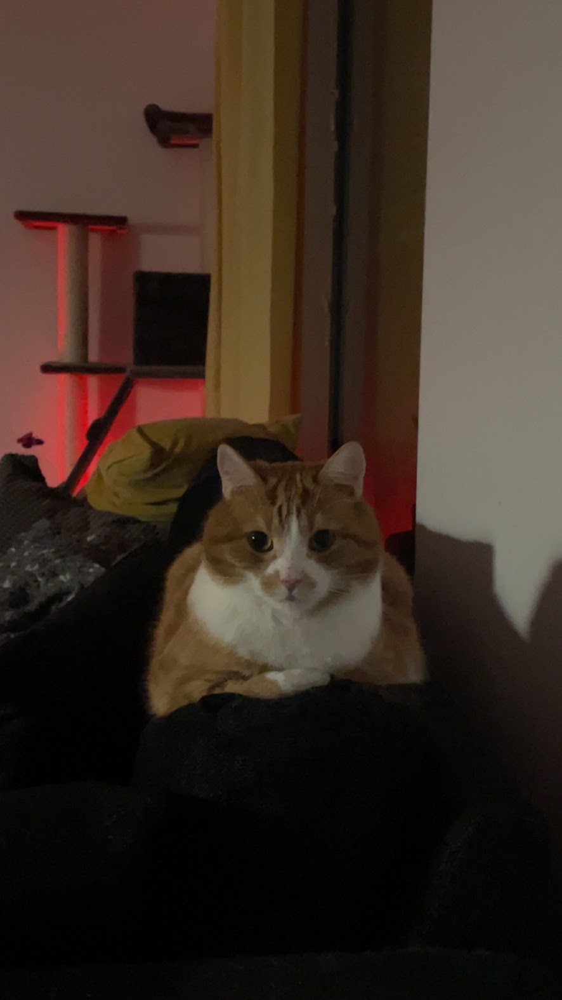

"The better I get to know men, the more I find myself loving dogs." - Charles de Gaulle
Labrador retriever
Hessu is a labrador retriever puppy. He is very cute and loves to hit his owner when he wants scratches.
Tuxedo cat
Pontus is a black and white tuxedo cat. He loves sunny spots and keeping an eye on the bird feeder.
My first dog was a cockerspaniel called Miro. He was a blue roan spaniel, so he was black, gray, and white. He was a funny boy and he loved sitting out on his yard facing the forest, just smelling whatever scents flew in with the wind. We even share a birthday! He was born on the 20th of May, 2009. He lived a very happy life with his own yard and an arch nemesis that was a blackbird. Curse that sordid sound it made!
My second dog is my own dog, a labrador retriever named Hessu. He is a clingy mama's boy but he adores his dad too. I'm trying hard to afford a house with a yard for him, but until then he has to make do with a balcony. He gets to go for walks in the forest and the surrounding fields. He likes to sleep on my back so in all honesty nights can be a bit sleepless but it's totally worth it.
My friend Teemu, who has since passed, had a cat named Tofi. Tofi is a caramel domestic shorthair cat and he is incredibly friendly, kind, and sociable. In a way Tofi is very much how Teemu was!
My childhood neighbour had two cats, Laku and Latte. They were both named after their colouring, Laku being a black cat and Latte being a cream-coloured cat.
My friend has a black staffordshire bullterrier named Dani. She is the sweetest little girl I've ever seen. When she smiles, her eyes light up and if she gets too excited she might wee a little.